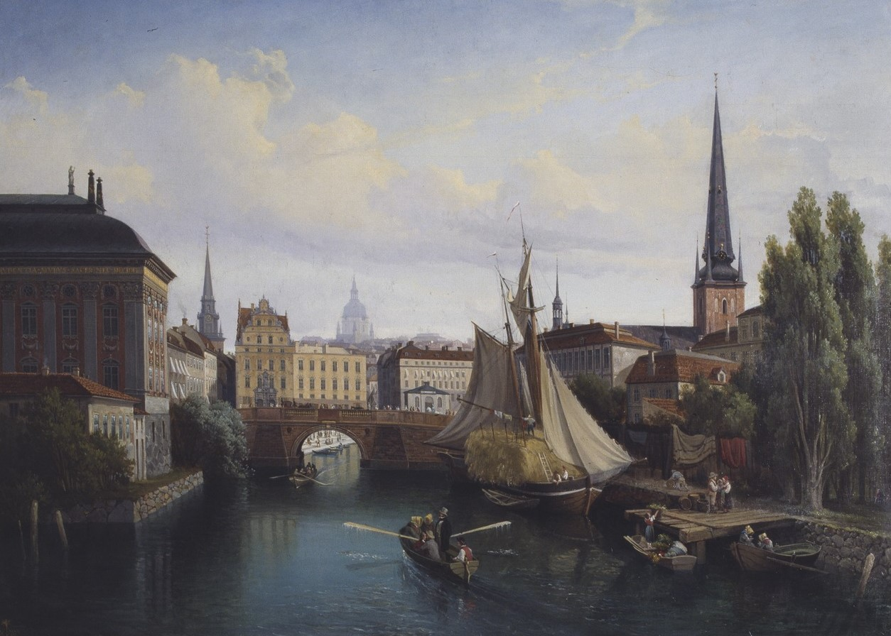

my outlook on 2025
2025-01-21

On a rainy night in the spring of 2024, wondering where my journey soon will head, I landed on the page of a masters program in machine learning in Sweden. I was just curious what the opportunities in other countries would look like. Though, for me it was relatively clear that I wanted to pursue academics until a graduate degree, preferably at ETH.
Ever since my childhood Sweden was a country I felt a strong connection to, even though I have grown up in Switzerland and visited Sweden only a handful of times. I believe this attachment stems from its nature with vast forests, lakes and archipelagoes as well as the many cultural facets like fika or midsommar. Maybe it also just runs in the family, my late grandfather was very much into Sweden from what I have learned.
So as 2024 progressed, I more and more realized that maybe this is exactly what I need. A complete change of scenery, throwing myself into a foreign world for at least two years. I started to really work towards this goal and locked in. Last year has probably been my best year yet academically. I was finally able to specialize into computer vision and deep learning, two fields that I always have been extremely curious about.
Now, as 2025 has started, I asked myself what is really important to me this year and I wanted to share some of my plans here.
I am really excited about is my upcoming bachelor's thesis. I will work on Neural Radiance Fields (NeRF) and Gaussian Splatting. Essentially, I am doing research on models that are able to produce a 3D-representation of a scene in which we just have a few input images.
As already mentioned, I cannot wait until the day of admission results and to hopefully get admitted to one of the graduate schools I applied to. I would love to dive deeper into autonomous systems so my goal is to enter that world through an academic institution in Sweden. Though, I am not making this interest just dependent on the admission so I want to build my own SLAM system this year. I pretty much know of all principles used, it will just be a factor of fusing them together into a working system. The only thing missing is knowledge in hardware and electronics so I will most likely build it inside a videogame that features driving, like GTA.
During the last semester I have also gotten the opportunity to build a real product with two friends at uni. We built a working MVP throughout the semester and got some positive resonance which affirmed that the idea has a market. This year we can make it work. We have more time at our hands than before and a clearer goal.
I am writing this post right before finals week. It sort of fills me with dread and anxiety knowing next week I will have my finals in deep learning and advanced deep learning. I feel comfortable with my knowledge but I know there is always room to improve. These courses triggered an interest in me to understand machine learning from first principles. Thus, I have started to build my own autograd library, inspired by Andrej Karpathy's micrograd and tinygrad. I hope to gain more intuition with this side project.
Outside of academia I am also really excited to spend the upcoming summer with my friends before leaving for some time. This year I will go to my first music festival which I am really excited for. In May I will attend my first running event at 16km (10mi) for which I need to get in shape. After my short-lived career in American Football I have only pursued weight lifting so getting my cardio in shape will be interesting.
I sometimes get hesitant and uncomfortable before trying new things, but in 2024 I pushed myself a bit and got more open to trying new things. I want to continue doing that in 2025 and experience more first time things.
tl;dr
- 🎓 Finish my bachelors degree
- 🇸🇪 Move to Sweden to pursue a MSc in Machine Learning!
- 📅 Release my first product Sirius (my first startup 👀)
- 🪶 Release my own autograd library
- 🚗 Implement SLAM from scratch in GTA
- ✍️ Write a post every month on here
- 🕺 Going to my first festival